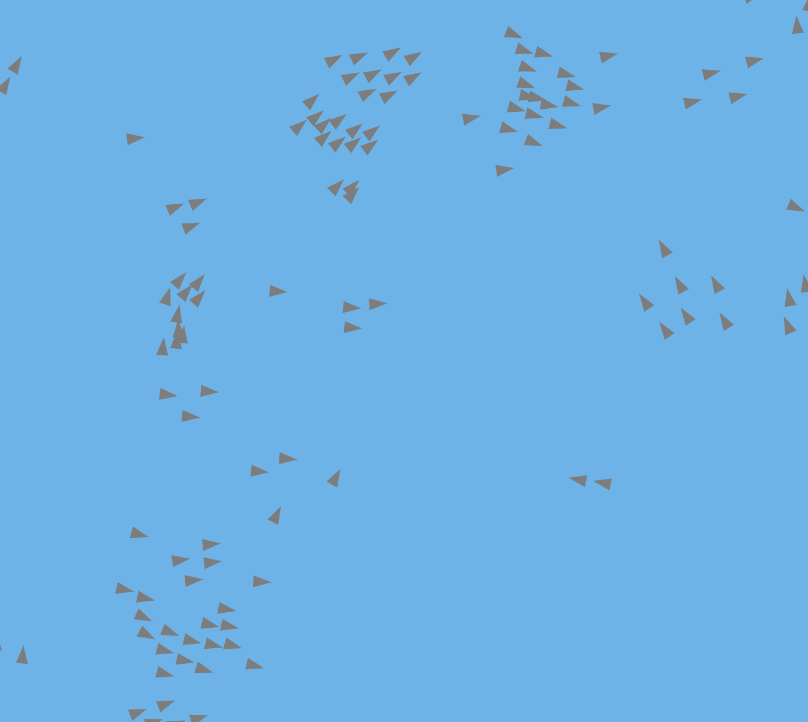
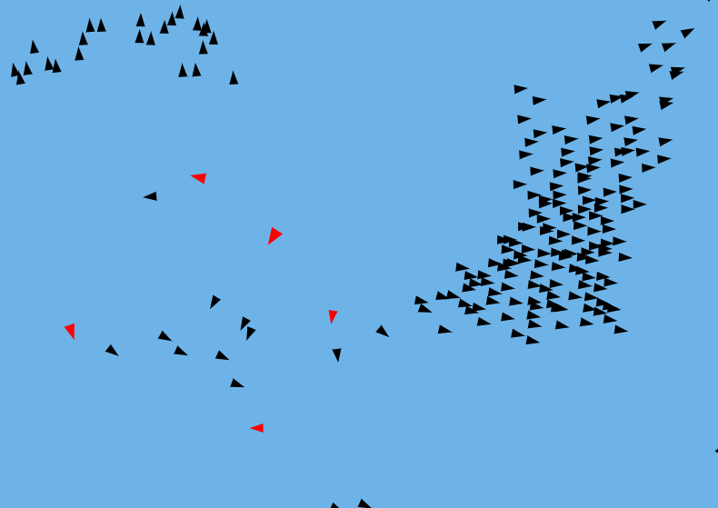
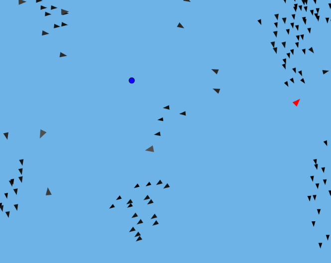

Iteration 1 – Basic Boids

This first version implements the three original Boids rules: alignment, cohesion, and separation. The result already shows emergent flocking behavior from very simple local interactions.
This page documents my journey in experimenting with the Boids model, a classic algorithm introduced by Craig Reynolds in 1986 to simulate the collective behavior of birds, fish, and other swarming creatures. Starting from the three fundamental rules — alignment, cohesion, and separation — I gradually built more complex versions, adding features, optimizations, and new interactions step by step.
Below, you can explore each iteration in chronological order, seeing how small modifications can completely transform the dynamics of the system. Each section contains a live simulation along with a short explanation of the changes introduced.
This first version implements the three original Boids rules: alignment, cohesion, and separation. The result already shows emergent flocking behavior from very simple local interactions.

In this version, I introduced a spatial hash table to efficiently handle neighborhood detection. Instead of checking every agent against all others, each Boid only searches within its assigned grid cell and the surrounding ones. This drastically reduces the number of distance calculations, allowing smoother performance and enabling larger flock sizes without slowing down the simulation.

In this version, I introduced predators into the system. When no prey is in sight, predators wander with random directions, but as soon as they detect a prey, they immediately start chasing it. Predators do not recognize each other — their vision is focused solely on the prey. Once a predator catches one, it grows in size but becomes slower, creating a balance between power and agility. This simple rule set generates tense and dynamic predator–prey interactions, adding another layer of realism to the simulation.

In this step, I introduced food sources for the prey. When prey eat, they grow in size and become slower, similar to predators after catching a target. Additionally, I implemented an aging effect: prey start completely black, and with each meal they gradually turn lighter. Once a prey reaches pure white, it dies and disappears from the simulation. This new cycle adds both resource management and a natural sense of life progression to the system, making the flocking behavior even more dynamic and unpredictable.